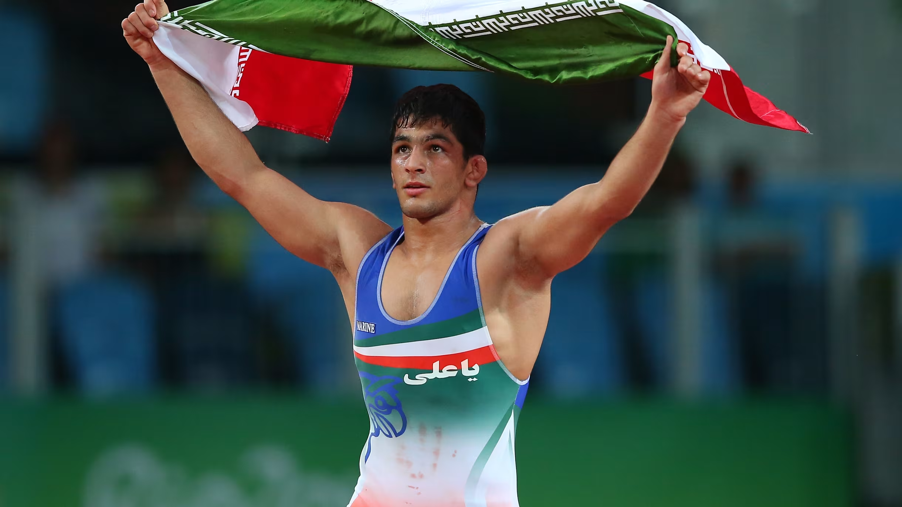

Top 3 Freestyle wrestlers in the world

3.Hassan Yazdani
- Country: Iran
- Weight Class:86KG
- Achievments:
- Olympic Champion (2016)
- 4-times World Champion
- Famous for his agility, technical precision, and powerful attacks.
2.Jordan Burroughs
- Country: USA
- Weight Class:74KG
- Achievments:
- Olympic Champion (2012)
- 7-times World Champion
- Renowned for his speed, explosive double-leg takedown, and consistent dominance.
1. Abdularshid Sadulaev
- Country: Russia
- Weight Class:97KG
- Achievments:
- 2-times Olympic Champion (2016,2020)
- 5-times World Champion
- Known as "The Russian Tank" for his unstoppable strength and technique.